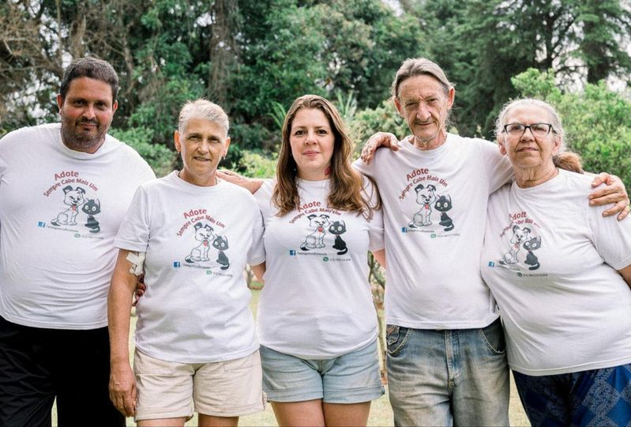
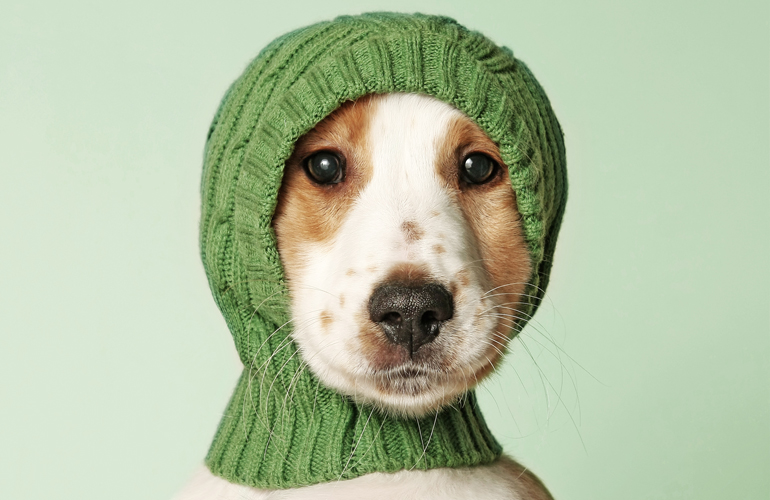
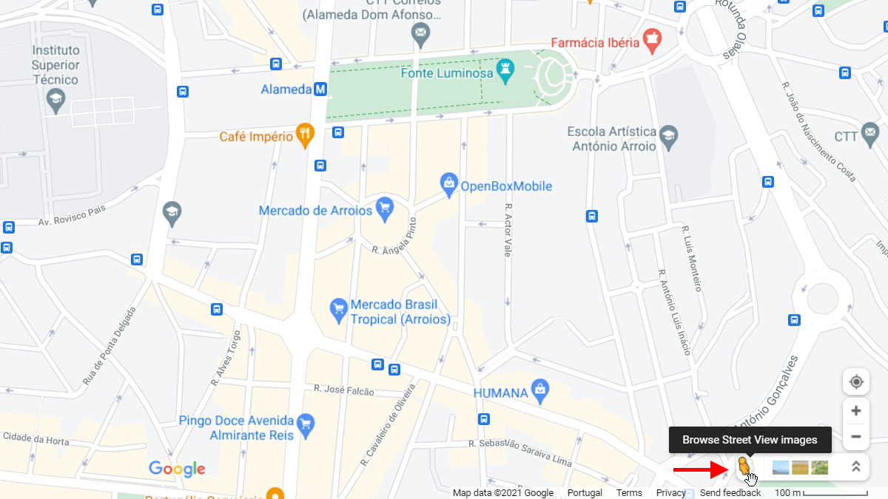

- 
- 
- 
Adote Sempre Cabe Mais Um - Zona Leste
Animais de rua são vistos cada vez com mais frequência por moradores da Zona Leste, pensando nisso, Abghail Deaij Carluci, protetora de animais há 18 anos, fundadora e presidente da ONG “Adote sempre cabe mais um”, em que 70% dos animais resgatados são da região leste. Os animais são doados já castrados, vacinados, vermifugados e entregues na residência do adotante.
Atualmente a fundadora Abghail alocou um espaço para poder cuidar dos animais abandonados e proporcionar maior conforto a eles. Porém, a verba das doações ainda é baixa em compensação ao número de animais abrigados. Para completar a renda, Abigail oferece projetos vinculados com seu projeto com da ONG, como hospedagem para cães e gatos, táxi dog e decoração para festas.